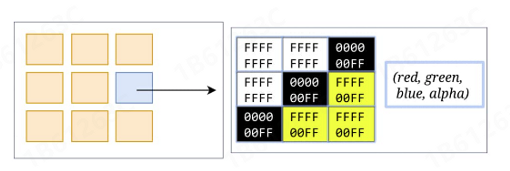
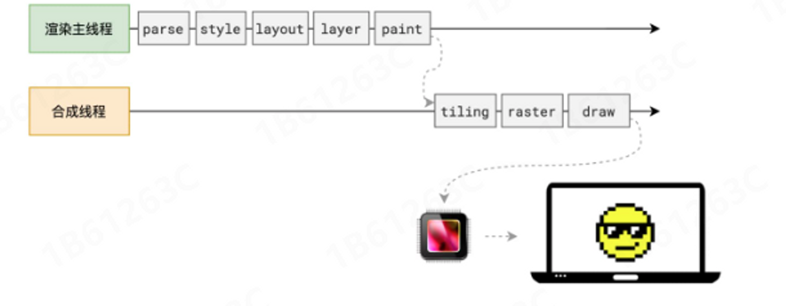
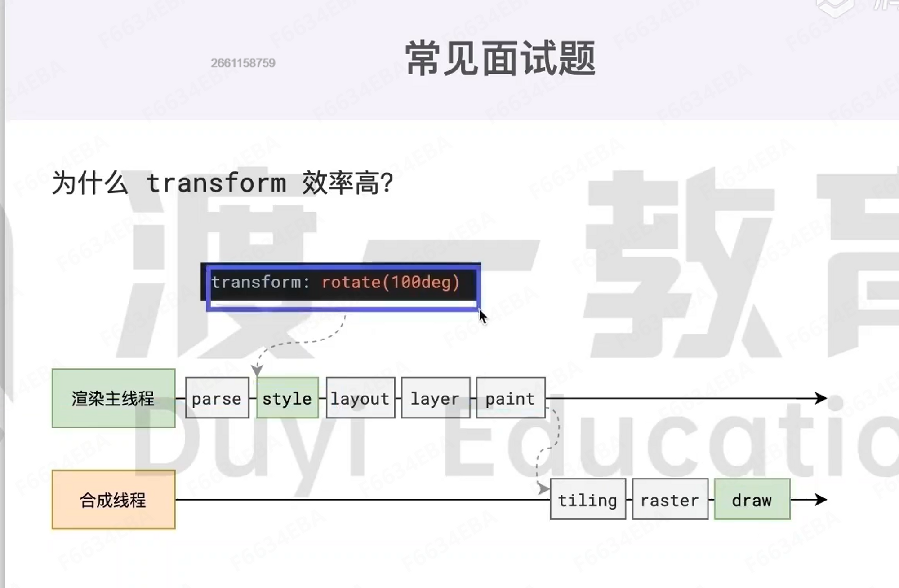

浏览器渲染原理
浏览器从输入 url 到渲染页面的过程
1、从浏览器输入框输入域名地址
2、浏览器通过 DNS 解析域名地址为 ip 地址
3、tcp 进行三次握手(首先浏览器向服务器发送一个信号（比喻：我要给你发送请求了，请做好准备），然后服务器接收到这个信号给服务器发送一个信号（比喻：我准备好了，请发送吧），然后浏览器发送一个信号（马上发生请求)）
4.浏览器拿到 html 文件数据，对浏览器页面进行渲染
一个标签页存在一个浏览器进程，浏览器存在多个进程（浏览器进程，插件进程，GPU 进程，渲染主进程）
渲染主进程包括下面五大线程
GUI 渲染线程：负责渲染浏览器页面，解析 html 和 css，形成 dom 树，cssom，render 树，布局树，还有 computed style(计算样式)，GUI 渲染线程与 js 引擎线程是互斥的，因为 js 可以改变 dom 树的变化，所以碰到 js 时会 GUI 会挂起，等到 js 引擎线程空闲时，GUI 线程就会立刻执行
js 引擎线程：称为 js 内核，负责处理 js 脚本程序（例如 V8 引擎），是单线程的，如果 js 执行时间过长可能造成页面渲染不连贯甚至渲染加载阻塞
事件触发线程：控制时间轮询，不属于 js 引擎线程（鼠标点击事件）
定时触发器线程：setTimeout 和 setInterval 不在 js 引擎线程，如果在 js 引擎线程中就会影响他的准确性
异步 http 请求线程：用于 XMLHttpRequest
5.断开链接(4 次挥手)
浏览器渲染原理
当浏览器的网络进程收到 html 文档时，会产生一个渲染任务，并将其传递给渲染主线程的消息队列。在事件循环的机制下，渲染主线程取出消息队列中渲染任务，开启渲染流程。
流程：HTML -> 解析 -> 样式计算 -> 布局 -> 分层 -> 绘制 -> 分块 -> 光栅化 -> 画
解析
解析过程中遇到 CSS 则解析 CSS，遇到 JS 执行 JS。为了提高解析效率，浏览器在开始解析前，会启动一个预解析的线程，率先下载 HTML 中的外部 CSS 文件和外部 JS 文件。
如果主线程解析到 link 位置但是外部的 css 还未解析完成，主线程不会等待，继续解析后续的 HTML，这是因为下载和解析 CSS 的工作是在预解析线程中进行的。这就是 CSS 不会阻塞 HTML 解析的根本原因
如果主线程解析到 script 位置，就会停止解析 HTML，等待此 script 解析完成再解析 HTML，
这里主要是因为 js 可以修改当前 dom 树，所以必须暂停 dom 树的生成，完成后得到 dom 树和 cssom 树，浏览器的默认样式，内部样式，外部样式，行内样式
样式计算
主线程会遍历得到的 DOM 树，依次为树中的每个节点计算出它的最终样式，称为 Computed Style
在这个过程中，很多预设值会变成绝对值，比如 red 变为 rgb(255,0,0);相对单位会变成绝对单位，比如 em 会变成 px
布局
布局阶段会依次遍历 DOM 树的每一个节点，计算每个节点的几何信息。例如节点的宽高，相对包含块的高度。比如display:none的节点没有几何信息，因此不会生成到布局树中；又比如伪元素选择器，它们不存在与 dom 树中，但是它们具有几何信息，所以会生成到布局树中，所以 dom 树与布局树不一致
分层
分层的好处在于，将来某一个层发生改变后，仅仅会对该层进行后续处理，从而提升效率。
滚动条，堆叠上下文，transform,opacity 等样式都会或多或少的影响分层结果，也可以通过will-change属性更大程度的影响分层结果
绘制
渲染主程序会为每个层单独产生绘制指令集，用于描述这一层的内容该如何画出来。完成绘制后，渲染主线程将每个图层的绘制信息提交给合成线程，剩余工作交由合成线程完成，合成线程首先对每个图层进行分块，将其划分为更多的小区域，它会从线程池中拿取多个线程来完成工作。
光栅化
合成线程将块信息交给 GPU 进程，以极快的速度完成光栅化 GPU 进程会开启多个线程来完成光栅化，并且优先处理靠近视口区域的块，如下：

画
合成线程拿到每个层每个块的位图后，生成一个个指引(quad) 信息，指引会标识每个位图应该花在屏幕的那个位置，以及会考虑到旋转，缩放等变形。变形发生在合成线程，与渲染祝线程无关，这就是 transform 效率高的本质原因。合成线程会把 quad 提交给 GPU 进程，由 GPU 进程产生系统调用，提交给 GPU 硬件，完成最终的屏幕成像。

面试题
reflow 重排（回流）
reflow 的本质就是重新计算布局树。当进行了影响布局树的操作后，需要重新计算布局树，会引发 layout,为了避免连续的多次操作导致布局树反复计算，浏览器会合并这些操作，当 js 代码全部完成后再进行统一的计算。所以改动 属性造成 reflow 是异步完成的。所以当 js 获取属性时，可能造成无法获取最新的布局信息，浏览器在我们获取属性时立即 reflow
repaint 重绘
repaint 的本质是重新根据分层信息计算了绘制指令，当改动了可见样式后，就需要重新计算，会引发 repaint,由于元素的布局信息也属于可见样式，所以 reflow 一定会引起重排
为什么 transform 效率高
因为 transform 发生在渲染流程中的 draw 阶段，没有发生在渲染主线程中，不需要经过重排(reflow)和重绘(repaint),只需要在 GPU 内部基于绘制好的纹理进行变换或混合，就不需要布局和重绘

📎 参考文章
参考下文：这文章太棒了！